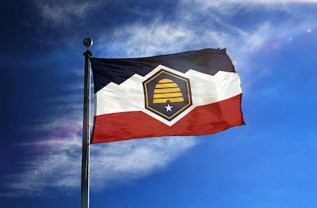

Tyson Hunter
About Me
Hello, I am Tyson Hunter. I was born in Brigham City, Utah in 2001. I currently live in Willard, Utah. I served a mission in South Houston, Texas from 2019-2021. I started BYU-Pathways in 2022.
Willard, Utah

Utah's Flag
Utah is a fantastic place for skiing, hiking, camping, boating, and more! It is also home to several national parks. The headquarters for the Church of Jesus Christ of Latter-day Saints is also located in Utah. Willard is situated between a mountain range and Willard Bay state park.